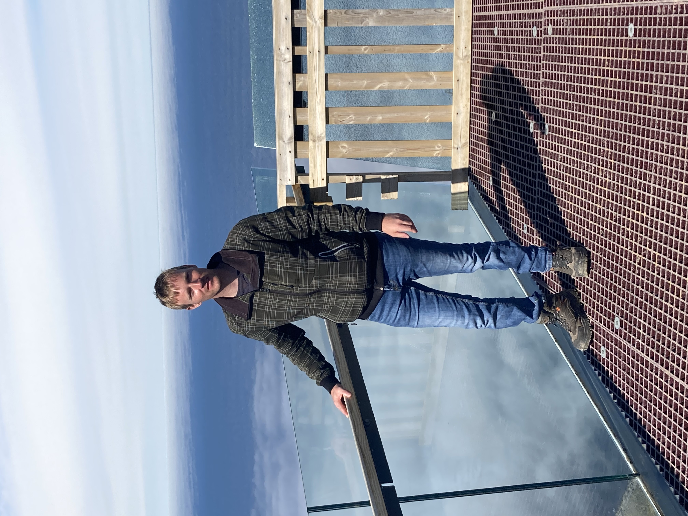

Zubereitung
Zuerst die Roulade flachklopfen, salzen, pfeffern und mit Senf bestreichen. Anschließend Zwiebeln und Gurken in feine Streifen schneiden und zusammen mit dem Speck auf der Roulade verteilen. Die Roulade sorgfältig einrollen und mit Küchengarn oder Zahnstochern fixieren, damit sie beim Braten ihre Form behält. In einem kleinen Topf Butterschmalz erhitzen und die Roulade darin rundherum scharf anbraten, sodass sie eine schöne goldbraune Kruste bekommt. Nach dem Anbraten die Roulade aus dem Topf nehmen und beiseite stellen. Im selben Topf das gewürfelte Gemüse anrösten, sodass es angenehme Röstaromen entwickelt. Das Tomatenmark kurz mitbraten, bis es etwas karamellisiert, und anschließend mit Rotwein und Rinderfond ablöschen. Die Roulade zurück in den Topf legen, mit der Flüssigkeit übergießen und alles bei niedriger Hitze etwa 90 Minuten schmoren lassen. In der Zwischenzeit die Kartoffeln schälen und in Salzwasser etwa 20-25 Minuten kochen, bis sie weich sind. Nach der Schmorzeit die Roulade vorsichtig aus dem Topf nehmen. Die Soße entweder durch ein Sieb passieren, um das Gemüse zu entfernen, oder für eine sämigere Konsistenz das Gemüse pürieren. Wer eine dickere Soße bevorzugt, kann diese nach Belieben mit etwas Stärke binden und mit Salz und Pfeffer abschmecken. Die fertige Roulade mit der sämigen Soße und den gekochten Kartoffeln servieren – ein perfektes Gericht für gemütliche Stunden.
Rezept erstellt von
